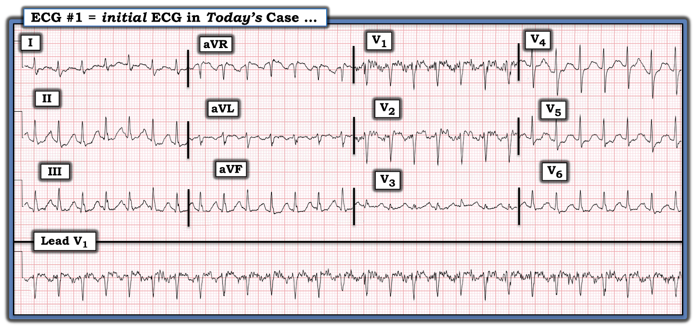
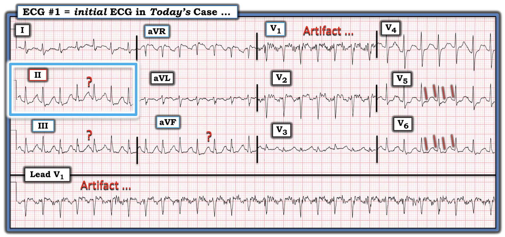
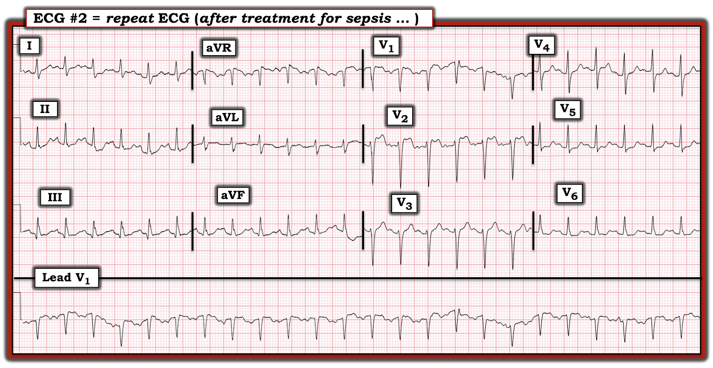
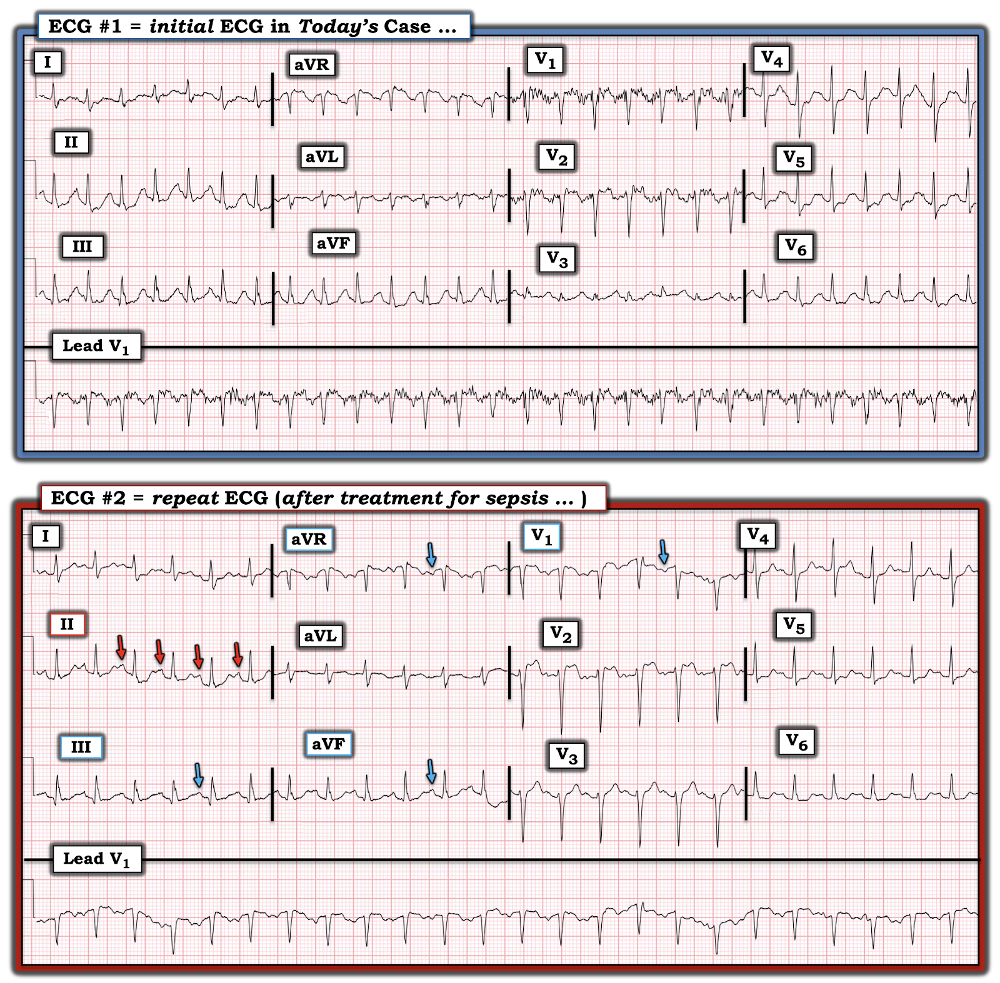

ECG Blog #451 — Kết luận vội vàng ...
Tôi nhận được điện tâm đồ trong Hình-1 — chỉ kèm thông tin bệnh nhân là một người đàn ông trung niên bị nhiễm khuẩn huyết.
CÂU HỎI:
- Nhịp này có quá nhanh để là nhịp nhanh xoang không?
- Có sóng cuồng nhĩ ẩn trong phức bộ QRS và sóng T không?
- Chúng ta có đang thấy sóng P ngược dòng của AVNRT không?
- Đây có phải là ATach (nhịp nhanh nhĩ — Atrial Tachycardia) không?


SUY NGHĨ CỦA TÔI về ca bệnh hôm nay:
Theo ý kiến của tôi — không câu trả lời nào ở trên là tối ưu để mô tả nhịp trong Hình-1. Tôi nói vậy vì lý do đơn giản: chọn bất kỳ phương án nào trong 4 phương án trên — tức là ngầm khẳng định chắc chắn 100% rằng bạn biết câu trả lời (hay, như tiêu đề bài Blog hôm nay ngụ ý — đó sẽ là kết luận vội vàng — premature closure).
- Thay vào đó, tôi cho rằng tốt hơn là thẳng thắn thừa nhận — Chúng ta không biết chắc chắn nhịp này là gì.
Dù vậy — tôi đã có ý niệm khá rõ nhịp này nhiều khả năng nhất là gì. Tuy nhiên, cho đến khi chúng ta biết chắc chắn — tôi nghĩ tốt nhất là chỉ đơn giản mô tả những gì chúng ta thấy:
- ĐIỂM THEN CHỐT (PEARL) #1: Cần nhận thức rằng với bất kỳ nhịp nhanh nào — có 6 Thông số cần được đánh giá. Thông số thứ 1 — là bảo đảm bệnh nhân ổn định huyết động. Lý do là NẾU bệnh nhân không ổn định — thì nhịp là gì không còn quan trọng nữa (vì sẽ cần sốc điện chuyển nhịp ngay lập tức — bất kể nhịp là VT hay SVT).
- Tiếp theo (giả sử bệnh nhân có ổn định huyết động) — Đánh giá nhịp theo 5 Thông số MẤU CHỐT còn lại — dễ nhớ nhất qua câu, “Hãy để ý các P, các Q — và 3 chữ R”. Khi đã thực hành nhiều — việc đánh giá 5 Thông số này thực sự chỉ mất không quá vài giây (Xem ECG Blog #185 — để biết thêm về Cách tiếp cận Ps,Qs,3R khi đọc nhịp).
Hãy để ý các P, các Q — và 3 chữ R:
Với nhịp ban đầu của ca hôm nay — tôi thấy như sau:
- Có nhiễu đáng kể, nhất là ở chuyển đạo V1,V2 (Xem Hình-2). Điều này khiến không thể đánh giá sóng P ở 2 chuyển đạo ngực này.
- Dù vậy — tôi nghĩ có thể có sóng P xoang ở các chuyển đạo dưới. Tuy nhiên, tôi không thể phân biệt chắc chắn giữa cái có thể là sóng P? — với sóng T? — với sóng P ẩn trong sóng T đi trước (tức là bên dưới các dấu ?' mà tôi đặt ở các chuyển đạo dưới).
- Mặt khác — Chẳng phải trông như có thể có hoạt động nhĩ 2:1 ở các chuyển đạo bên V5,V6 (các vạch ĐỎ xiên trong các chuyển đạo này)? Vì vậy — tôi không chắc chắn về sự hiện diện và/hoặc bản chất của hoạt động nhĩ.
- LƯU Ý: Các chuyển đạo "ưu tiên" của tôi khi tìm hoạt động nhĩ thêm vào là chuyển đạo II,III,aVF; aVR; và V1 — đó là lý do tôi không bị thuyết phục, dựa trên các vạch ĐỎ mà tôi vẽ trong Hình-2, rằng đây thực sự là hoạt động nhĩ 2:1.
Tiếp tục với 5 Thông số:
- Nhịp trong Hình-2 Regular — đều — với Rate — tần số khoảng ~160/phút (tức là khoảng R-R hơi ngắn hơn 2 ô lớn).
- Phức bộ QRS hẹp ở cả 12 chuyển đạo (tức là Không quá nửa ô lớn ở bất kỳ chuyển đạo nào trong 12 chuyển đạo).
- Thông số cuối cùng trong 5 Thông số — là liệu sóng P có Related — liên quan với phức bộ QRS hay không. Nhưng vì chúng ta còn không chắc liệu có hoạt động nhĩ hay không? (và nếu có — hoạt động nhĩ đó là sóng P xoang, sóng cuồng nhĩ, hay thứ gì khác?) — nên chúng ta chưa thể giải quyết Thông số thứ 5 này.
- ĐIỀU CỐT LÕI: Nhịp ban đầu của ca hôm nay là một SVT đều (nhịp nhanh trên thất — SupraVentricular Tachycardia) tần số ~160/phút, nhưng không có dấu hiệu rõ ràng về sự hiện diện và bản chất của hoạt động nhĩ.
ĐIỂM THEN CHỐT (PEARL) #2: Nhận ra nhịp trong Hình-1 là một SVT đều — nhưng không chắc chắn về hoạt động nhĩ — nên thúc đẩy ta cân nhắc DANH SÁCH chẩn đoán phân biệt (Xem ECG Blog #240) sau đây:
- i) Nhịp nhanh xoang (nếu sóng P xoang ẩn bên dưới các dấu ? trong Hình-2 ).
- ii) Một SVT do vào lại (hoặc là AVNRT nếu vòng vào lại nằm gọn trong nút AV — hoặc AVRT nếu có sự tham gia của một đường phụ nằm ngoài nút AV);
- iii) Nhịp nhanh nhĩ (ATach);
- iv) Cuồng nhĩ (AFlutter) với dẫn truyền AV 2:1.
Điểm MẤU CHỐT: Dù các bệnh cảnh khác cũng có thể gây SVT đều (tức là nhịp nhanh vào lại nút xoang nhĩ, nhịp nhanh bộ nối) — chúng ít gặp hơn nhiều trong thực hành. Vì vậy, nhớ nghĩ tới 4 bệnh cảnh trong DANH SÁCH trên mỗi khi gặp một nhịp SVT đều mà không có dấu hiệu rõ ràng về hoạt động nhĩ — sẽ giúp rất nhiều cho việc xác định đúng chẩn đoán.
ĐIỂM THEN CHỐT (PEARL) #3: Hãy cân nhắc Bệnh sử:
- Bệnh nhân có đang dùng thuốc chống loạn nhịp nào không? (Điều này cần cân nhắc — vì nó có thể ảnh hưởng tới tần số và đặc tính dẫn truyền của SVT).
- Có tiền sử đã biết về các nhịp tương tự không?
- Bệnh cảnh lâm sàng là gì? (tức là Trong ca hôm nay bệnh nhân bị nhiễm khuẩn huyết — do đó dường như dễ bị nhịp nhanh xoang!).
ĐIỂM THEN CHỐT (PEARL) #4: Hãy cân nhắc Rate — tần số của SVT:
- Ở người lớn — Nhịp nhanh xoang thường không vượt quá 160-170/phút ở bệnh nhân "nằm" (tức là bệnh nhân bạn đang khám, không phải vừa mới chạy xong). Điều này không có nghĩa là nhịp nhanh xoang không bao giờ nhanh hơn 170/phút — mà chỉ gợi ý rằng khi tần số của nhịp SVT đều bạn đang đánh giá vượt xa khoảng tần số này — thì nhịp đó ít khả năng là nhịp nhanh xoang. LƯU Ý: Ở trẻ em thì mọi quy tắc đều không còn đúng — nhịp nhanh xoang trên 200/phút ở trẻ em không phải là hiếm.
- Với AFlutter — đáp ứng thất thường gặp nhất ở bệnh nhân không điều trị thuốc chống loạn nhịp là ~150/phút (khoảng thường gặp ~140-160/phút). Lý do là tần số nhĩ trong AFlutter chưa điều trị thường là ~300/phút (khoảng thường gặp ~250-350/phút) — và vì AFlutter chưa điều trị thường biểu hiện với dẫn truyền AV 2:1 — 300/2 ~150/phút. Do đó — NẾU tần số thất của nhịp SVT đều bạn đang đánh giá trên ~170-180/phút (nhưng dưới ~250/phút) — thì AFlutter ít khả năng hơn (vì tần số này nhanh hơn mong đợi với dẫn truyền AV 2:1, và quá chậm với dẫn truyền AV 1:1).
- LƯU Ý: Khoảng ~140-160/phút này là cho AFlutter chưa điều trị. Bệnh nhân đã đang dùng thuốc chống loạn nhịp có thể biểu hiện AFlutter với tần số nhĩ chậm hơn (và do đó đáp ứng thất chậm hơn).
- Cần nhớ rằng ATach là ít gặp hơn như một nguyên nhân gây SVT đều tuyệt đối, nhất là ở người lớn trẻ đến trung niên vốn khỏe mạnh. ATach hay gặp hơn ở bệnh nhân được chuyển làm EP (thăm dò điện sinh lý — ElectroPhysiologic testing) — và ở người lớn tuổi có SSS (hội chứng suy nút xoang — Sick Sinus Syndrome). Tôi đưa ATach vào DANH SÁCH chẩn đoán phân biệt ở trên cho đầy đủ — nhưng hãy lưu ý rằng nó sẽ không gặp thường xuyên bằng AFlutter và các SVT do vào lại.
- Vì vậy — NẾU tần số của một SVT đều không có dấu hiệu rõ ràng của sóng P xoang nhanh hơn đáng kể so với 160-170/phút — thì nhịp SVT vào lại (tức là AVNRT hoặc AVRT) trở thành chẩn đoán nhiều khả năng nhất.
- Nhưng — NẾU tần số của SVT đều gần 150/phút (như nhịp ban đầu của ca hôm nay với ~160/phút) — thì bất kỳ bệnh cảnh nào trong 4 chẩn đoán ở DANH SÁCH trên đều có thể có mặt!
ĐIỂM THEN CHỐT (PEARL) #5: Những cân nhắc khác có thể hữu ích:
- Hãy tìm Hoạt động nhĩ! — điều chúng ta đã bàn cho nhịp hôm nay (Xem ở trên). Dùng compa đo có thể giúp việc tìm hoạt động nhĩ dễ hơn.
- Hãy tìm một “Chỗ ngắt” (hoặc thay đổi tinh tế) trong Nhịp! — Chỉ cần một khoảng ngưng nhỏ trong nhịp SVT, cũng có thể đủ để bộc lộ hoạt động nhĩ nền vốn bị che khuất bởi nhịp nhanh đều. Không có "chỗ ngắt" nào trong nhịp ở Hình-2. Dù vậy, có thể hữu ích khi tìm lại dữ liệu theo dõi từ xa (Telemetry) — vì có thể đã có thay đổi nhịp nào đó sớm hơn một chút trong diễn tiến của bệnh nhân.
- Hãy tìm “Lúc khởi phát” (và/hoặc Lúc kết thúc) của Nhịp! — Manh mối MẤU CHỐT cho nguyên nhân của một SVT thường nằm ở việc ghi được hoặc lúc bắt đầu và/hoặc lúc kết thúc SVT.
- ATach thường bắt đầu từ từ, với ổ lạc chỗ tăng tốc dần (tức là hiện tượng “khởi động” (warm-up)). Sau đó, nhịp có thể chậm dần (tức là “hạ nhiệt” (cool-down)) khi kết thúc.
- Ngược lại — các nhịp SVT vào lại thường khởi đầu bằng 1 hoặc nhiều PAC bị blốc dẫn truyền xuống một trong các đường dẫn truyền của nút AV, điều này giúp thiết lập vòng vào lại khi xung động bắt đầu đi xuống đường còn lại. Do đó — sự khởi phát của SVT vào lại thường đột ngột (tức là lý giải cho thuật ngữ trước đây dùng để gọi nhịp này = PSVT = SVT kịch phát — Paroxysmal SVT). Sự kết thúc của các nhịp SVT vào lại cũng thường nhanh (dù có thể diễn ra qua vài nhát).
- Cuối cùng, khi nghi ngờ Nhịp nhanh xoang trên lâm sàng (như trong ca hôm nay) — cần nhận thức rằng theo thời gian tần số nhịp nhanh xoang thường sẽ thay đổi (chậm đi hoặc nhanh lên) khi tình trạng bệnh nhân tốt lên hoặc xấu đi.
ĐIỂM THEN CHỐT (PEARL) #6: Dù mục tiêu của chúng ta là đưa ra chẩn đoán nhịp chính xác nhất có thể — thì "tin tốt" là về mặt thực hành — các biện pháp chẩn đoán và/hoặc điều trị ban đầu ngoài hiện trường hoặc tại khoa cấp cứu (ED) cho một nhịp SVT đều chưa phân định là tương tự nhau (tức là cân nhắc nghiệm pháp cường phế vị — và/hoặc dùng thuốc ức chế nút AV như Verapamil/Diltiazem; thuốc chẹn ß, và có thể Adenosine).
- T.B. (P.S.): Nếu bạn nghi ngờ nhịp SVT đều nhiều khả năng là nhịp nhanh xoang — thì thay vì dùng thuốc chống loạn nhịp, chỉ cần điều trị bệnh lý nền có thể là đủ.


===============================
CA BỆNH hôm nay TIẾP DIỄN:
Bệnh nhân được điều trị nhiễm khuẩn huyết. Đã tiêm tĩnh mạch Metoprolol liều rất thấp. Điện tâm đồ ghi lại được trình bày dưới đây trong Hình-3.
- Điều gì đã xảy ra?


===============================
TRẢ LỜI — và KẾT LUẬN CA BỆNH:
Để dễ so sánh, trong Hình-4 — tôi đã đặt cạnh nhau cả hai điện tâm đồ của ca hôm nay.
- Sau khi điều trị nhiễm khuẩn huyết — bệnh nhân cải thiện về lâm sàng. Nhờ đó — tần số tim ở điện tâm đồ #2 giờ đã chậm lại vừa đủ để phân biệt rõ sóng P xoang (các mũi tên ĐỎ ở chuyển đạo II của điện tâm đồ ghi lại).
- Giờ đây sóng P xoang cũng được thấy rõ ở từng chuyển đạo "ưu tiên" của tôi (các mũi tên XANH ở các chuyển đạo này), cũng như ở hầu như tất cả các chuyển đạo trên bản ghi này.
- So sánh điện tâm đồ #2 với bản ghi ban đầu — Chúng ta có thể thấy rằng sóng P xoang đã hiện diện suốt từ đầu! Do tần số rất nhanh ở điện tâm đồ #1 — sóng P xoang chỉ đơn giản là bị ẩn trong phần cuối của sóng T đi trước.
- Ngoài ra, trên điện tâm đồ ghi lại — có một số bất thường ST-T không đặc hiệu (có thể liên quan tần số) — và khả năng có sóng U (khó xác định — vì tần số tim vẫn còn nhanh 140-150/phút) lớn. Cần kiểm tra nồng độ K+ và Mg++ huyết thanh.


==========================================
Lời cảm ơn: Xin cảm ơn Sam Ghali @EM_RESUS (từ Jacksonville, Florida — Hoa Kỳ) đã chia sẻ ca bệnh và bản ghi này.
==========================================

================================
Các bài ECG Blog liên quan đến ca hôm nay:
- ECG Blog #185 — Ôn lại Cách tiếp cận Ps, Qs & 3Rs để đọc nhịp một cách hệ thống.
- ECG Blog #188 — Ôn lại những điều cốt yếu để đọc (và/hoặc vẽ) Giản đồ bậc thang (laddergram), kèm ĐƯỜNG DẪN tới nhiều giản đồ bậc thang tôi đã vẽ và bàn chi tiết trong các bài blog khác.
- ECG Blog #240 — SVT đều ...
- ECG Blog #229 — Vì sao AFlutter hay bị bỏ sót đến vậy?
- ECG Blog #138 — AFlutter so với nhịp nhanh nhĩ.
- ECG Blog #40 — Một SVT đều khác hóa ra là AFlutter.
Các trang khác nơi tôi đã bàn về những ca tương tự:
- Bài ngày 6 tháng 3 năm 2020 trên Dr. Smith's ECG Blog.
- Bài ngày 16 tháng 10 năm 2019 trên Dr. Smith's ECG Blog.
- Mời xem bài ngày 12 tháng 11 năm 2019 trên Dr. Smith's ECG Blog — trong đó tôi đã bình luận một ca thuộc một dạng nhịp SVT đều (AFlutter) khác.